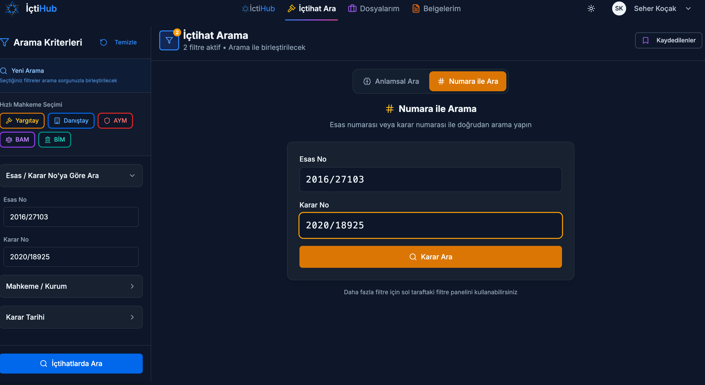
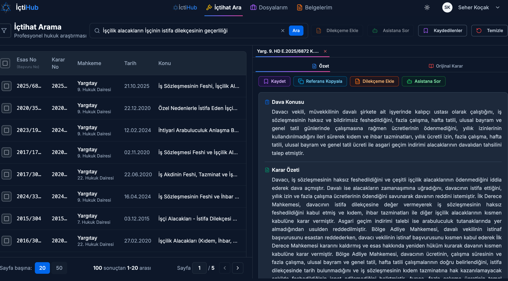

Emsal kararı anlamıyla bulmak: hukukta semantik arama
Bir avukatın en sinir bozucu anlarından biri şudur: Aradığınız emsalin orada bir yerde olduğundan eminsinizdir, ama hangi kelimeyle ararsanız arayın karşınıza çıkmaz. "Ya yanlış terimi yazdıysam?" Bu küçük kuşku, milyonlarca karar arasında kaybolmuş doğru gerekçeyle aranıza giren görünmez bir duvardır. İşte semantik arama, tam da bu duvarı yıkmak için var.
İçindekiler
Doğru emsali bulmak neden bu kadar zor?
Hukukta doğru karar, çoğu zaman doğru emsali bulmaktan geçer. Ama bu "bulma" işi göründüğünden çok daha çetindir. Karşınızda milyonlarca karar vardır; elinizdeyse sınırlı bir zaman ve bir dosya teslim tarihi. Üstelik aradığınız şey her zaman net bir kelime değil, çoğu zaman bir durumdur: kiracının evden çıkarılması, bir sözleşmenin belirli bir koşulu yüzünden geçersiz sayılması, bir idari işlemin usul yönünden iptali.
Geleneksel arama motorları ise kelimelerle düşünür, durumlarla değil. Siz bir olayı anlatmak istersiniz; sistem ise sizden o olayın tam karşılığı olan hukuki terimi yazmanızı bekler. Olayın hukuki niteliğini henüz tam oturtamadığınız bir anda -- ki araştırmanın amacı çoğu zaman tam da budur -- doğru terimi bilmek mümkün değildir. Sonuç: saatler süren bir tarama ve buna rağmen "acaba gözden mi kaçırdım?" diye içe işleyen bir tedirginlik.
Asıl mesele kelimeyi bulmak değil; anlamı bulmaktır.
Anahtar kelime aramasının kör noktaları
Klasik arama, birebir kelime eşleşmesine dayanır. Sorgunuzdaki sözcükleri bir dizinle (indeks) eşleştirir ve belgeleri TF-IDF veya BM25 gibi yöntemlerle sıralar. Bu yaklaşım hızlıdır ve adı net bir kanun maddesini ararken kusursuz çalışır. Sorun, kullanıcı tam doğru terimi bilmediğinde başlar; o anda ilgili belge basitçe görünmez kalır.
Hukuk dili, eş anlamlılık ve terim çeşitliliği bakımından özellikle zorludur. Birkaç örnek düşünün:
- "İhtiyaç nedeniyle tahliye" ile "gereksinim sebebiyle tahliye": aynı hukuki kurum, farklı kelimeler.
- "Tahliye" ararken kararda "kiralananın boşaltılması" ifadesinin geçmesi.
- "Araba tamiri" ile "otomotiv bakımı": gündelik hayattan, ama mantığı birebir hukuka taşınan bir örnek; farklı kelimeler, neredeyse aynı anlam.
Anahtar kelime araması bu yakınlıkları göremez. Onun için "ihtiyaç" ile "gereksinim" tamamen yabancı iki dizgedir. İkinci kör nokta daha da inceliklidir: olayın hukuki niteliğini bilmeden arama yapamamak. Müvekkilin anlattığı somut olayı doğru hukuki kavrama tercüme edemiyorsanız, hangi anahtar kelimeyi yazacağınızı da bilemezsiniz. Arama, daha başlamadan tıkanır.
Semantik arama nasıl çalışır?
Semantik aramanın tek bir temel farkı vardır: kelimeyi değil, anlamı eşleştirir. "Araba tamiri" ile "otomotiv bakımı" farklı kelimelerden oluşsa da anlamca yakın oldukları için aynı sonuçlara ulaşır. Peki makine anlamı nasıl "kavrar"? Cevap, kulağa teknik gelen ama aslında oldukça sezgisel bir fikirde gizli: embedding.
Embedding, bir metnin anlamının sayısal temsilidir. Bir cümle ya da paragraf, yüksek boyutlu bir uzayda koordinata benzeyen sayı dizilerine, yani vektörlere çevrilir. Bu uzayda anlamca benzer şeyler birbirine yakın, alakasız şeyler ise uzak konumlanır. Bunu kocaman bir kütüphane gibi düşünebilirsiniz: kitaplar artık alfabeye göre değil, konularına göre raflanmıştır. "Kira" ile ilgili her şey aynı köşede toplanır; siz hangi kelimeyle sorarsanız sorun, o köşeye götürülürsünüz.
İki metnin birbirine ne kadar yakın olduğu çoğunlukla kosinüs benzerliği (vektörler arasındaki yönün -1 ile 1 arasında karşılaştırılması) veya k-en yakın komşu (kNN) algoritmasıyla ölçülür. Tüm bu vektörler ise vektör veritabanlarında saklanır; böylece milyonlarca belge arasında anlamca en yakın olanlar saniyeler içinde getirilebilir.
| Boyut | Anahtar kelime araması | Semantik arama |
|---|---|---|
| Eşleştirdiği şey | Birebir kelime (dizin) | ✓ Anlam (vektör) |
| Eş anlamlı terimler | Kaçırır | ✓ Yakalar |
| Olayı kendi cümlenizle anlatma | Zor, terim bilmek şart | ✓ Doğal dille mümkün |
| Net madde/numara araması | ✓ Çok güçlü | Tek başına yeterli değil |
Dikkat edin: tablo, anahtar kelime aramasını kötülemiyor. İki yöntem birbirinin rakibi değil, tamamlayıcısıdır. En sağlam sonuç, ikisini birleştiren hibrit aramadan doğar; bu noktaya yazının sonunda döneceğiz.
Türk içtihadının devasa hacmi
Bu teknolojinin neden bir lüks değil, bir zorunluluk olduğunu anlamak için Türk yargısının ölçeğine bakmak yeterli. Sayılar, içtihadı insan gözüyle tek tek tarama fikrini tek başına çürütüyor.
Bunlar yalnızca bir kesit. Yargıtay'ın 2023'te karara bağladığı dosya sayısı 264 bini aşmış durumda; Anayasa Mahkemesi'ne aynı yıl yaklaşık 110 bin bireysel başvuru yapılmış. Danıştay'ın resmî emsal arama sistemi tek başına 379 binden fazla belge barındırıyor. Buna bir de Bölge Adliye Mahkemeleri'nin (BAM) hızla büyüyen istinaf külliyatını ekleyin. Tablo nettir: hiçbir hukukçu, bu hacmi sayfa sayfa tarayarak en isabetli emsali bulamaz.
İyi haber şu ki resmî kaynaklar erişilebilir durumda: UYAP Emsal Karar Arama, Yargıtay Karar Arama ve Danıştay Emsal Karar Arama gibi sistemler herkese açık. Ama erişilebilir olmak ile anlamla erişilebilir olmak farklı şeylerdir. Asıl mesele, bu devasa havuzdan doğru kararı doğru soruyla çekip çıkarabilmektir.

Olayı kendi cümlenizle anlatın, emsali bulun
Semantik aramanın hukukçu için en somut getirisi budur: artık olayı kendi cümlenizle anlatabilirsiniz. "Kiracı tahliye taahhüdü vermiş ama tarihi boş bırakılmış; taahhüde dayalı tahliye mümkün mü?" gibi gündelik, doğal bir cümleyi sisteme verebilir, tam karşılığı olan teknik terimi bilmek zorunda kalmazsınız. Sistem, cümlenizin anlamını kavrar ve aynı hukuki çekirdeği taşıyan kararlara götürür.
İyi bir hukuk arama katmanı burada bir adım daha atar: getirdiği kararın asıl gerekçesini, yani kararın özünü (ratio decidendi) öne çıkarır. Onlarca sayfa içinde kaybolmak yerine, "bu karar neden bu yönde verilmiş?" sorusunun cevabını önünüze koyar. Üstelik kararı ilgili mevzuatla otomatik eşleştirir; hangi kanun maddesi, hangi tebliğ, hangi yönetmelik devrede, hepsini bir arada görürsünüz.

Özet + mevzuat eşleştirmesi
Burada devreye RAG (getirimle güçlendirilmiş üretim) mantığı girer. Sistem önce anlamca ilgili kararı getirir, ardından yanıtı bu gerçek belgeye dayanarak üretir. Böylece saf bir dil modelinin "gerçek belgeye erişememe" sorunu büyük ölçüde aşılır; özet havadan değil, elinizdeki karardan doğar.
Bu yaklaşım, hukukun üç ayağını -- mevzuat, içtihat ve tebliğ üçgenini -- tek bir akışta birbirine bağlar. Burada Türk hukukunun kaynak hiyerarşisini hatırlatmakta fayda var: Anayasa, kanun, KHK, Cumhurbaşkanlığı kararnamesi, tüzük, yönetmelik ve tebliğ şeklinde net bir sıra vardır. İçtihat, kural olarak bağlayıcı bir norm değil, normun yorumudur; istisnası İçtihadı Birleştirme Kararları ile Anayasa Mahkemesi kararlarıdır. Bu ayrımı bilen bir araç, getirdiği emsali doğru ağırlıkla sunar; bir Yargıtay dairesi kararını İçtihadı Birleştirme Kararıyla aynı kefeye koymaz.
Öne çıkanlar
- Anahtar kelime araması birebir kelimeyi, semantik arama ise anlamı eşleştirir; eş anlamlı hukuki terimleri ancak ikincisi yakalar.
- Embedding, metni anlam uzayında bir vektöre çevirir; benzerlik kosinüs benzerliği veya kNN ile ölçülür.
- Türk içtihadının hacmi (yüz binlerce karar) insan gözüyle taranamayacak kadar büyüktür.
- Olayı doğal dille anlatıp kararın özünü ve ilgili mevzuatı bir arada görebilmek, en büyük pratik kazanımdır.
- En isabetli sonuç, semantik ve anahtar kelime aramasını birleştiren hibrit yaklaşımdan doğar.
Sınırlar ve sorumluluk
Burada dürüst olmak şart: yapay zeka, hukukçunun yargısının yerine geçmez. Dil modellerinin bilinen bir riski var: halüsinasyon, yani emin bir tavırla yanlış ya da hiç var olmayan bilgi üretmek. Bu, soyut bir kaygı değil. Stanford araştırmacılarının değerlendirmesi, "halüsinasyon yok" iddiasıyla pazarlanan önde gelen ticari hukuk araçlarının (Lexis+ AI ve Westlaw AI-Assisted Research gibi) bile %17 ile %33 arasında yanlış veya uydurma bilgi üretebildiğini ortaya koydu.
RAG bu oranı belirgin biçimde düşürür, çünkü modeli gerçek belgelere bağlar. Ama tamamen sıfırlamaz. Dolayısıyla birkaç ilke pazarlık konusu değildir:
- Kaynağı her zaman doğrulayın. Getirilen kararın numarasını, dairesini ve tarihini orijinal metinden teyit edin.
- Güncelliği kontrol edin. İlgili kanun mülga (yürürlükten kalkmış) olabilir; geçici maddeler veya sonraki bir içtihat tabloyu değiştirmiş olabilir.
- Hibrit arama kullanın. Önce anlamla bulun, sonra anahtar kelime ve filtrelerle daraltıp teyit edin.
Yapay zekanın "uydurma yapan" bir araçtan "kaynak gösteren" bir araca nasıl dönüştüğünü daha derinlemesine merak ediyorsanız, RAG nedir ve büyük dil modeli nedir yazıları iyi bir başlangıç olur.
Semantik arama, anahtar kelime aramasının yerini mi alıyor?
Hayır. İkisi birbirini tamamlar. Net bir kanun maddesi ya da karar numarası ararken anahtar kelime araması daha güçlüdür; bir olayı anlamıyla ararken ise semantik arama öne çıkar. En sağlam sonuç, ikisini birleştiren hibrit aramadan gelir.
Embedding tam olarak nedir?
Embedding, bir metnin anlamının sayısal temsilidir. Metin, yüksek boyutlu bir uzayda koordinata benzeyen bir sayı dizisine (vektöre) çevrilir. Anlamca benzer metinler bu uzayda birbirine yakın konumlanır; arama da bu yakınlığı ölçerek yapılır.
Yapay zekanın getirdiği karara güvenebilir miyim?
Bir başlangıç noktası olarak evet, kesin sonuç olarak hayır. Dil modelleri yanlış bilgi üretebildiği için kaynağı orijinal metinden doğrulamak ve mevzuatın güncelliğini kontrol etmek şarttır. Araç, araştırmayı hızlandırır; nihai sorumluluk hukukçudadır.
İçtihat bağlayıcı bir norm mudur?
Kural olarak hayır; içtihat, normun yorumudur ve bağlayıcı norm sayılmaz. Bunun başlıca istisnaları İçtihadı Birleştirme Kararları ile Anayasa Mahkemesi kararlarıdır. İyi bir arama aracı bu ağırlık farkını dikkate alarak sonuç sunar.
Biz EcoFluxion'da semantik aramayı bir gösteriş aracı olarak değil, hukukçunun zamanını geri veren bir katman olarak görüyoruz. İçtiHub'ın amacı avukatın işini değiştirmek değil, hızlandırmaktır: en sıkıcı, en çok zaman alan tarama yükünü üstlenip kararı ve gerekçesini önünüze koymak. Son sözü her zaman hukukçu söyler. Bu yaklaşımın neden özellikle Türkçe için önem taşıdığını "Neden Türkçe yapay zeka?" yazısında okuyabilirsiniz.